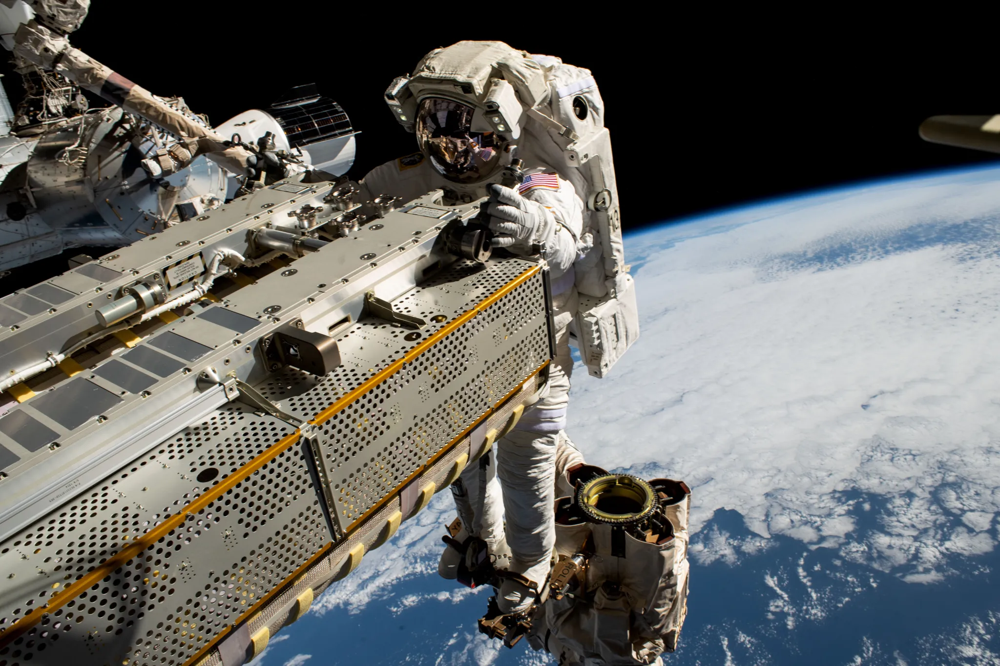
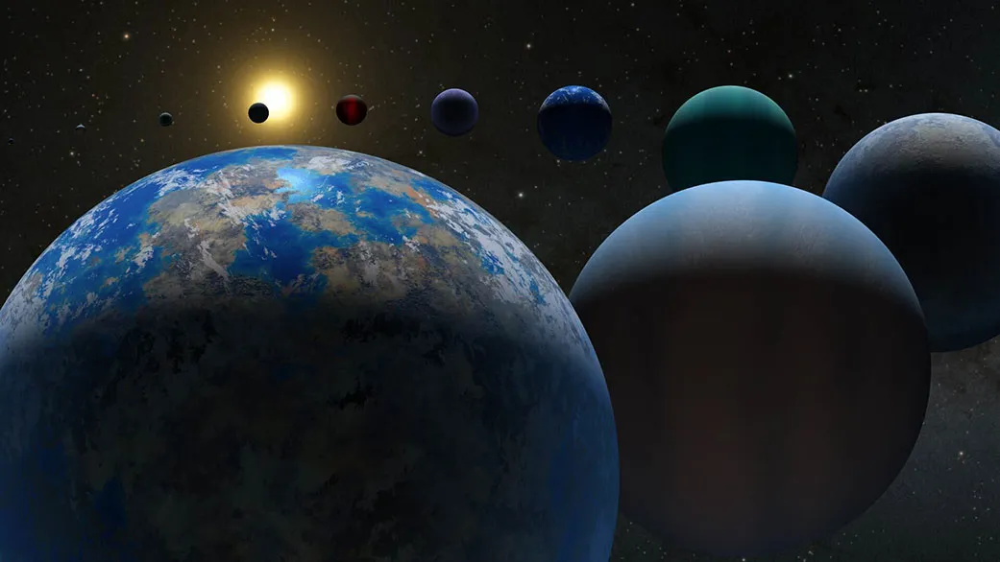

NASA (National Aeronautics and Space Administration)
Active Programs Of NASA:
International Space Station (1993-present):

The International Space Station (ISS) combines NASA's Space Station
Freedom project with the Russian Mir-2 station, the European Columbus
station, and the Japanese Kibō laboratory module. NASA originally
planned in the 1980s to develop Freedom alone, but US budget
constraints led to the merger of these projects into a single
multi-national program in 1993, managed by NASA, the Russian Federal
Space Agency (RKA), the Japan Aerospace Exploration Agency (JAXA), the
European Space Agency (ESA), and the Canadian Space Agency
(CSA).American astronauts exclusively used the Soyuz for crew
transport to and from the ISS. The highest number of people occupying
the ISS has been thirteen; this occurred three times during the late
Shuttle ISS assembly missions.The ISS program is expected to continue
until 2030,[58] after which the space station will be retired and
destroyed in a controlled de-orbit.
Earth Sciences Program Missions (1965-present):

NASA Earth Science is a large, umbrella program comprising a range of
terrestrial and space-based collection systems in order to better
understand the Earth system and its response to natural and
human-caused changes. Numerous systems have been developed and fielded
over several decades to provide improved prediction for weather,
climate, and other changes in the natural environment. S everal of the
current operating spacecraft programs include: Aqua, Aura,Orbiting
Carbon Observatory 2 (OCO-2), Gravity Recovery and Climate Experiment
Follow-on (GRACE FO), and Ice, Cloud, and land Elevation Satellite 2
(ICESat-2).NASA also maintains the Earth Science Data Systems (ESDS)
program to oversee the life cycle of NASA's Earth science data, from
acquisition through processing and distribution. The primary goal of
ESDS is to maximize the scientific return from NASA's missions and
experiments for research and applied scientists, decision makers, and
society at large.